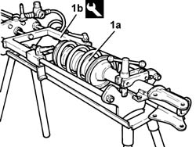
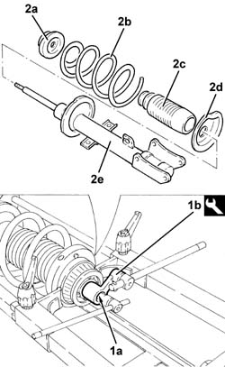
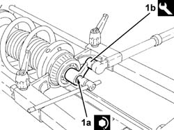

4420A12 REAR SUSPENSION DAMPER (ONE), LH OR RH - FOR MCPHERSON STRUT SYSTEM - INCLUDES DISMENTLING/REBUILDING OF ASSEMBLY AT BENCH R R
- Path
- Procedures > 44 SUSPENSION AND WHEELS > 4420 REAR SUSPENSION > 4420A REAR DAMPERS AND SPRINGS > 4420A12 REAR SUSPENSION DAMPER (ONE), LH OR RH - FOR MCPHERSON STRUT SYSTEM - INCLUDES DISMENTLING/REBUILDING OF ASSEMBLY AT BENCH R R
- Kind
- repair procedure (removal / refitting; the operation number is the code)
- Applies to
- all engines; all production periods
- Interactive page
- https://sloeber94.github.io/elrnDB-aGt/en/#/125001449
Applies to: all engines; all production periods
 Removing
Removing
 Refitting
RefittingPosition the vehicle on the ramp
Proceed with removal
Op. 4450B11 TYRE INFLATION VALVE CAP - REPLACE
Proceed with removal
1. Fit spring/shock aborber assembly (1a) to tool (1b) and compress.
Op. 4420A10 L/H OR R/H REAR SUSPENSION SPRING/DAMPER UNIT (ONE) R+R
 | Name | Country |
|---|---|---|
1b | Mount | 1.874.555.001 |

Applies to: all engines; all production periods
1. Undo the nut (1a) for the shock absorber upper buffer using the tool (1b).
| Name | Country |
|---|---|---|
1b | Key | 1.860.973.000 |
2. Loosen the tool and separate upper buffer (2a), gaiter (2c), lower washer (2d) and damper (2e).

Applies to: all engines; all production periods
Refitting
RemovingAssemble the spring/shock absorber components and fit to the tool.
| Name | Country |
|---|---|---|
- | Mount | 1.874.555.001 |
1. Tighten the nut (1a) for the shock absorber upper buffer to the recommended torque using the tool (1b).
 | Fastening | Component | Ø | Value (daNm) |
|---|---|---|---|---|
1a | Nut | UPPER REAR DAMPER ATTACHMENT 9S.M.) | M14 | 6.3 ÷ 7.7 |
| Name | Country |
|---|---|---|
1b | Key | 1.860.973.000 |

Applies to: all engines; all production periods
Loosen the tool and remove the spring/shock absorber assembly.
Proceed with refitting
Op. 4420A10 L/H OR R/H REAR SUSPENSION SPRING/DAMPER UNIT (ONE) R+R.
Proceed with refitting
Op. 4450B11 TYRE INFLATION VALVE CAP - REPLACE.
Remove the car from the ramps.
Proceed with refitting
Op. 4450A40 REAR WHEEL GEOMETRY - CHECK USING OPTICAL EQUIPMENT.
Topics linked from this page (3)
- 4420A10 L/H OR R/H REAR SUSPENSION SPRING/DAMPER UNIT (ONE) R+R
- 4450A40 REAR WHEEL GEOMETRY - CHECK USING OPTICAL EQUIPMENT
- 4450B11 TYRE INFLATION VALVE CAP - REPLACE